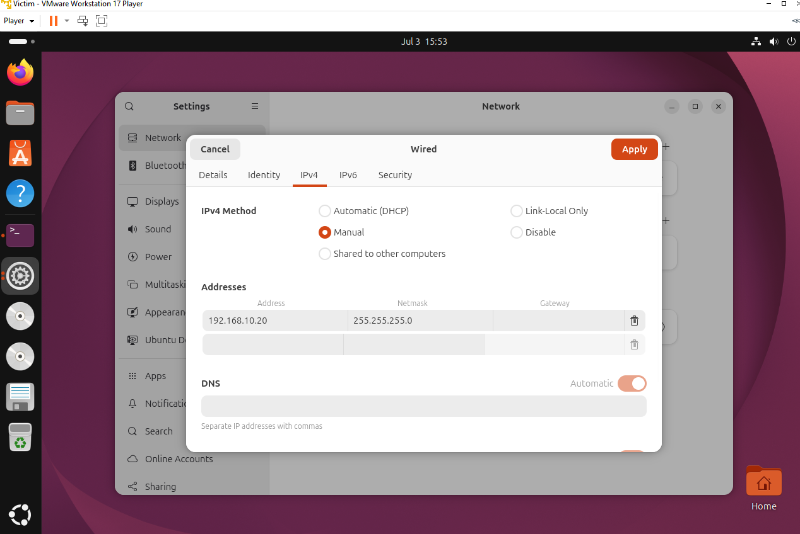
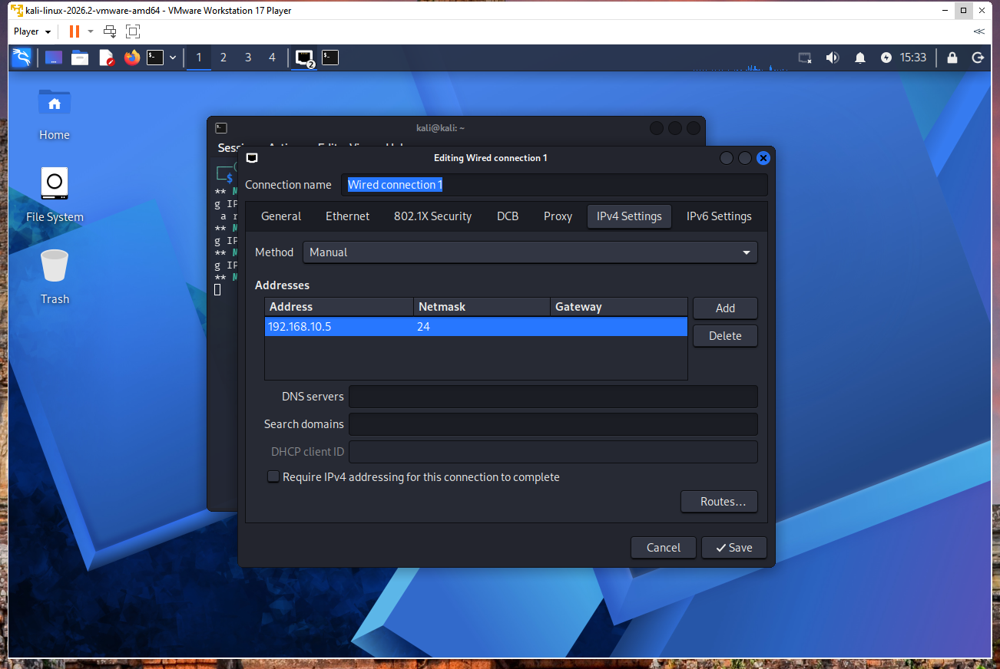
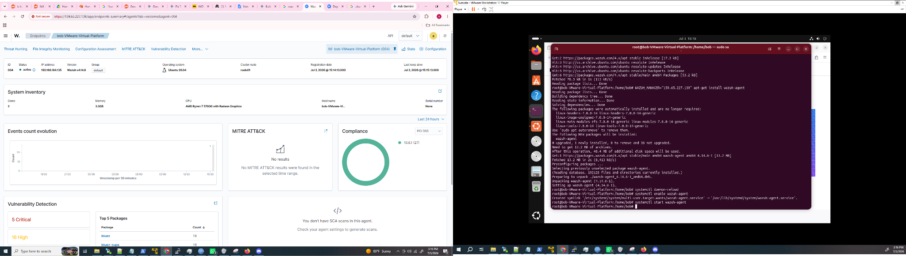
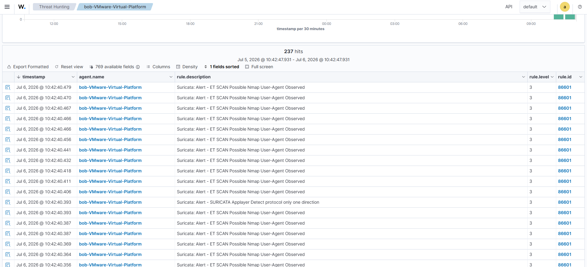
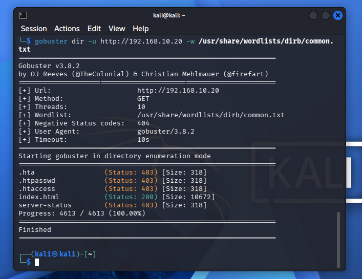
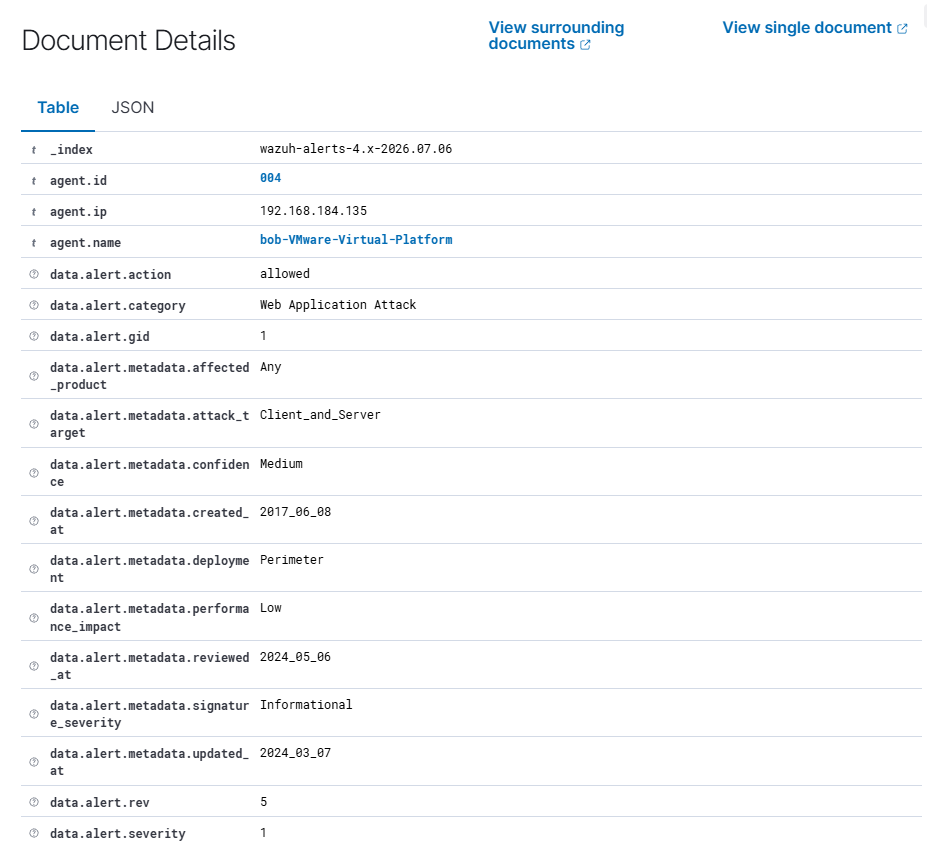

Advanced Network Threat Detection and Telemetry Analysis
Deploying network IDS telemetry and triaging reconnaissance in an isolated VMware sandbox (July 2026).
This report documents a self-contained network security lab designed to practice identifying and triaging reconnaissance and directory enumeration attacks using an open-source Intrusion Detection System (Suricata) paired with a centralized Security Information and Event Management (SIEM) platform (Wazuh). It builds on the Wazuh installation from my previous brute-force detection lab. The narrative covers environment setup, dual-homed sensor architecture, attack simulation from both Layer 4 and Layer 7, SIEM triage of Suricata telemetry, and the troubleshooting process when the Wazuh agent's event queue saturated under high-volume Gobuster traffic.
Executive Summary
I designed, deployed, and triaged an enterprise-grade network threat detection system within a completely isolated virtual sandbox. By combining Suricata with Wazuh, I established full network visibility and security analytics across the wire. My key objectives were to validate network visibility through promiscuous mode on a virtual broadcast domain, deploy a dual-homed security sensor to segregate attack traffic from SIEM reporting pipelines, analyze high-fidelity signature alerts while observing the performance boundaries of endpoint log transmission agents, and simulate real-world reconnaissance behaviors to dissect how network footprints translate to structured JSON telemetry alerts.
Technologies Used
- Suricata: Open-source network IDS/IPS for signature-based threat detection
- Wazuh: SIEM platform for centralized log ingestion and alert triage
- Ubuntu 24.04: Operating system for the Suricata sensor and victim web server
- Kali Linux: Attacker environment for offensive simulation tools
- Apache: Web server on the victim machine serving as the Layer 7 target
- Nmap: Network scanner used for Layer 4 stealth reconnaissance
- Gobuster: Directory enumeration tool for Layer 7 web fuzzing
- VMware Workstation Player 17: Virtualization platform for the isolated lab network
- jq: Command-line JSON processor for Suricata output analysis
- Emerging Threats Open: Threat intelligence signature feed for Suricata
Environment and Network Topology
I hard-configured the lab to use the private, non-routable RFC 1918 Class C space 192.168.10.0/24 (subnet mask 255.255.255.0) to completely isolate malicious scans from my physical home LAN. I connected all three machines to the same LAN segment through VMware Workstation Player 17 and manually configured static IPs for each node:
- Kali Linux (
192.168.10.5): Threat actor / simulation station. NIC 2 disconnected during attack phase. - Suricata IDS Host (
192.168.10.10): Network security sensor. NIC 2 on DHCP for out-of-band management to the Wazuh manager. - Ubuntu Victim VM (
192.168.10.20): Target web infrastructure running Apache. NIC 2 disconnected during attack phase.
I enabled promiscuous mode globally on the virtual switch segment, forcing the Suricata host network card to pass all packets traveling across the switch up to the detection engine rather than dropping frames not explicitly addressed to its own MAC address. I deliberately dual-homed the Suricata IDS VM with two distinct NICs: NIC 1 acts as a blind sniffer on the internal switch with no default gateway, while NIC 2 serves as a dedicated out-of-band management pipeline to stream security events cleanly to the master Wazuh Manager without routing logs through an active attack path.
Because I needed internet access to download packages before isolating the network, I gave each VM two virtual adapters: one NAT interface for package installations and one LAN segment adapter for the simulation. After staging dependencies, I disabled the NAT adapters on the Kali and Victim nodes and left only the Suricata VM connected to the Wazuh agent via its management interface.

Implementation
I implemented the lab in three phases:
Phase I: Pre-Isolation Dependency Staging
While internet access was active, I provisioned Apache2 and network utility toolsets on the victim node, updated the Kali application suite to ensure Gobuster and the dirb common wordlist were locally cached, installed Suricata alongside jq on the security sensor, synchronized the latest Emerging Threats Open signature bundle, and installed and registered the Wazuh agent daemon on the sensor operating system.


Phase II: Network Isolation and Link Control
I severed WAN connections by disconnecting the internet-facing adapters on both the Kali attacker and victim nodes within the hypervisor. I swapped local OS configuration from dynamic DHCP to persistent static variables matching the internal lab subnet schema, and issued raw kernel commands on the Suricata node to force the sniffing interface card into absolute listening mode.
Phase III: Intrusion Engine Tuning and Telemetry Pipelines
I reconfigured suricata.yaml to restrict internal scanning tracking exclusively to 192.168.10.0/24, mapped Suricata's multi-threaded packet processing loops onto the validated interface (ens33) capturing internal traffic frames, and configured the local Wazuh agent (ossec.conf) to actively ingest and tail Suricata's unified JSON output stream (eve.json).
Attack Simulation
With network containment active and the logging pipeline fully established, I fired two core adversarial techniques from the Kali platform:
Vector A: Layer 4 Network Reconnaissance (Nmap Stealth Scan)
I ran nmap -sS -A -v 192.168.10.20 to send raw TCP packets with the SYN flag activated without completing the three-way handshake. Nmap compared the subtle TCP window properties and packet responses from the victim machine against its internal catalog to reverse-engineer the host operating system type and map active listener ports.
Vector B: Layer 7 Directory Enumeration (Web Fuzzing)
I ran gobuster dir -u http://192.168.10.20 -w /usr/share/wordlists/dirb/common.txt to hammer the target web server with consecutive rapid-fire HTTP GET transactions mapping to common directory paths, identifying hidden administrative interfaces based on response code metrics.
Detection and Analysis
From the defense perspective, I reviewed the centralized Wazuh dashboard and isolated indicators of compromise using the following telemetry criteria. I filtered the SIEM data array using rule.groups: "suricata", which surfaced distinct signature rule triggers generated by the raw Nmap scan, pointing to anomalous flag combinations and explicit OS identification attempts.

After confirming Nmap detection, I ran the Gobuster directory enumeration attack against the Apache client on the victim machine. The Gobuster output showed the directories and response codes discovered during the fuzzing run.

I also evaluated the deeper raw JSON objects nested inside the Suricata alert scheme, which allowed me to inspect transport protocol states, verify the attacker-controlled source IP (192.168.10.5), and evaluate signature IDs derived from the Emerging Threats open-source intelligence feed.

Issues Encountered and Resolution
When I ran the Gobuster directory enumeration attack, the Wazuh agent event queue overloaded under the volume of events generated by the brute-force-style HTTP requests. I saw "Agent event queue is full" alerts on the dashboard as the local internal software buffers were saturated by the volume of raw Suricata events.
I changed the Wazuh agent queue size to 80,000 and the events per second limit to 1,000 (from the defaults of 5,000 and 500 respectively), then restarted the Wazuh agent and ran the Gobuster scan again. I continued to have issues with the agent dropping events, so I opted to disable the client buffer entirely for this simulation to prevent validation loops from dropping critical security events during the automated flood.
Appendix: Configuration Notes
The following configuration changes were central to making the telemetry pipeline work:
- suricata.yaml: I set the home network to
192.168.10.0/24and bound the capture interface toens33, the LAN segment adapter on the Suricata VM. - ossec.conf: I added Suricata's
eve.jsonoutput stream to the local Wazuh agent's log collection configuration so network alerts would flow into the SIEM. - Promiscuous mode: I enabled promiscuous mode on the Suricata sniffing interface via kernel commands so the sensor could observe traffic between the Kali attacker and the victim, not just frames addressed to its own MAC.
- Agent buffer tuning: During Gobuster floods, I increased the client queue size and events-per-second limits, and ultimately disabled the client buffer to prevent event drops under high-volume directory enumeration traffic.